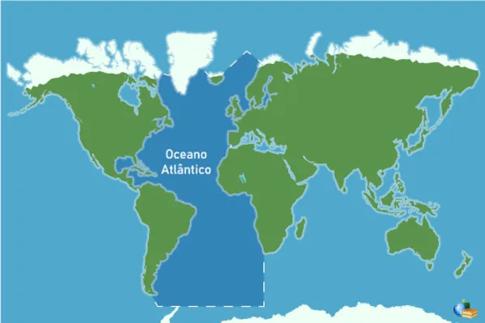

Oceano Atlântico
Extensão
O oceano Atlântico é o segundo maior oceano em extensão, com uma área de aproximadamente 106 400 000 km², cerca de um quinto da superfície da Terra. É o oceano que separa a Europa e a África a Leste, da América, a Oeste. Seu nome deriva de Atlas, uma divindade da mitologia grega. É por isso que, às vezes, o oceano Atlântico é referido como "mar de Atlas". A menção mais antiga sobre seu nome é encontrada em Histórias, de Heródoto, por volta de 450 a.C.. Antes de os europeus descobrirem outros oceanos, o termo "oceano" foi sinônimo de todas as águas que circundam a Europa Ocidental e que os gregos acreditavam ser um grande rio que circundava toda a Terra. Esta denominação desapareceu, no entanto, na Idade Média, altura em que se utilizava o nome de "mar Ocidental" ou "mar do Norte" (que hoje designa uma parte do Atlântico, o mar do Norte). O responsável pelo reaparecimento do nome "Atlântico", foi o geógrafo Mercator ao colocá-lo no seu célebre mapa do mundo em 1569. A partir deste momento a nomenclatura da idade média foi gradualmente sendo substituída por este nome, que subsistiu até os nossos dias.
O oceano Atlântico apresenta uma forma semelhante à letra S. Sendo uma divisão das águas marítimas terrestres, o Atlântico é ligado ao oceano Ártico (que em algumas vezes é referido como sendo apenas um mar do Atlântico), a norte, ao oceano Pacífico, a sudoeste, e ao oceano Índico, a sudeste, e ao oceano Antártico, a sul. (Alternativamente, ao invés do oceano Atlântico ligar-se com o oceano Antártico, pode-se estabelecer a Antártida como limite sul do oceano, sob outro ponto de vista). A linha do Equador divide o oceano em Atlântico Norte e Atlântico Sul. Com um terço das águas oceânicas mundiais, o Atlântico inclui mares como o Mediterrâneo, o mar do Norte, o Báltico e o mar das Caraíbas (Caribe).
Fundo Oceânico

Mapa que usa a cor para mostrar a profundidade do oceano.
O fundo oceânico apresenta uma disposição regular: a plataforma continental, ampla ao largo das costas da Europa, da América do Norte e da porção meridional da América do Sul, estreita-se nas costas da África e do Brasil; uma enorme cadeia de montanhas submarinas, a dorsal meso-atlântica, estende-se ao longo do oceano; entre ela e os continentes abre-se uma série de bacias de 6 000 a 7 000 m de profundidade (bacias americana, brasileira e argentina, a Oeste; bacias escandinava, da Europa Ocidental, da Guiné, de Angola e do Cabo, a Este).
A crista dorsal é sulcada em toda a sua extensão por uma grande fossa tectônica (rift), que secciona no sentido longitudinal. Área de constante instabilidade geológica, provocada pela contínua emissão de material ígneo, é objeto de estudos geológicos que analisam os processos de formação e evolução das placas tectônicas, ou seja, da crosta terrestre.
A crista da dorsal meso-atlântica situa-se geralmente entre -3 000 e -1 500 m, mas emerge em alguns pontos, formando ilhas: Jan Mayen, Islândia, Açores, Ascensão, Tristão da Cunha. Nas latitudes equatoriais, a dorsal é cortada por falhas transversais que determinam fossas abissais (fossa da Romanche. -7 758 m). Nas outras porções do Atlântico as fossas são raras: situam-se nas Antilhas (Ilhas Caimão e Porto Rico — a mais profunda com -9 218 m) e nas ilhas Sandwich do Sul (-8 264 m).
Características
Das áreas cobertas pelas águas oceânicas pode-se considerar um domínio continental e um domínio oceânico.
No domínio continental englobam-se os seguintes elementos morfológicos:
- Plataforma continental — zona circundante da maior parte das costas, ligeiramente inclinada, coberta por sedimentos continentais, que corresponde às zonas marginais imersas dos continentes; zona que prolonga o continente para o mar até a uma profundidade de 200 m;
- Talude continental — nesta zona, o declive acentuado é, muitas vezes, sulcado por desfiladeiros, representando o limite da parte imersa do domínio continental; a zona imersa estende-se até profundidades de 4 000 m.
No domínio oceânico englobam-se os seguintes elementos morfológicos:
- Planícies abissais — zona plana que ocupa grande extensão do fundo dos oceanos e que ocorre às profundidades de aproximadamente, 5 000 metros em média. São superfícies quase planas que representam o tecto da crosta oceânica não perturbada, oculta por uma camada de sedimentos pelágicos, de um modo geral pouco espessa. Os relevos que perturbam esta planície são normalmente de origem vulcânica, mas dividem-se em dois grupos consoante são, ou não sismicamente activos;
- Dorsais médio-oceânicas — são relevos vulcânicos dos fundos oceânicos que se situam geralmente na parte média ou nos bordos dos oceanos, formadas por alinhamentos de cadeias montanhosas separadas por riftes; elevam-se a 3 000 m acima dos fundos das bacias e estendem-se por uma largura se cerca de 1 000 km;
- Fossas oceânicas — zonas profundamente entalhadas no fundo oceânico, onde se verifica a convergência de placas tectónicas; localizam-se perto dos arcos vulcânicos ou na base do talude continental, nas proximidades de cadeias montanhosas que ocorrem nas margens dos continentes;
- Bacias oceânicas — nascem, evoluem e morrem com relativa rapidez, pelo que os seus fundos são essencialmente constituídos por rochas relativamente recentes.
Países e territórios banhados pelo oceano
O oceano Atlântico, incluindo os mares Báltico, Mediterrâneo e Negro, banha os seguintes países e territórios (em itálico):
Europa
 Albânia
Albânia Alemanha
Alemanha Bélgica
Bélgica Bósnia e Herzegovina
Bósnia e Herzegovina Chipre
Chipre Croácia
Croácia Dinamarca
Dinamarca Eslovênia
Eslovênia Espanha
Espanha Finlândia
Finlândia França
França Guernsey
Guernsey Gibraltar
Gibraltar Grécia
Grécia Ilha de Man
Ilha de Man Ilhas Feroé
Ilhas Feroé Irlanda
Irlanda Islândia
Islândia Itália
Itália Jersey
Jersey Letônia
Letônia Lituânia
Lituânia Malta
Malta Mónaco
Mónaco Montenegro
Montenegro Noruega
Noruega Países Baixos
Países Baixos Polónia
Polónia Portugal
Portugal Reino Unido
Reino Unido Rússia
Rússia Suécia
Suécia Turquia
Turquia
África
 África do Sul
África do Sul Angola
Angola Benim
Benim Cabo Verde Cabo Verde
Cabo Verde Cabo Verde Camarões
Camarões Costa do Marfim
Costa do Marfim- Espanha (Ilhas Canárias)
 Gabão
Gabão Gâmbia
Gâmbia Gana
Gana Guiné
Guiné Guiné-Bissau
Guiné-Bissau Guiné Equatorial
Guiné Equatorial Libéria
Libéria Marrocos
Marrocos Mauritânia
Mauritânia Namíbia
Namíbia Nigéria
Nigéria- Portugal (Arquipélago da Madeira)
 República Democrática do Congo
República Democrática do Congo República do Congo
República do Congo Saara Ocidental (reivindicado pelo Marrocos)
Saara Ocidental (reivindicado pelo Marrocos) Santa Helena, Ascensão e Tristão da Cunha
Santa Helena, Ascensão e Tristão da Cunha São Tomé e Príncipe
São Tomé e Príncipe Senegal
Senegal Serra Leoa
Serra Leoa Togo
Togo
Antártida
 Ilha Bouvet
Ilha Bouvet
América do Sul
 Argentina
Argentina Brasil
Brasil Chile
Chile Colômbia
Colômbia Guiana
Guiana- Guiana Francesa
 Ilhas Geórgia do Sul e Sandwich do Sul
Ilhas Geórgia do Sul e Sandwich do Sul Ilhas Malvinas
Ilhas Malvinas Suriname
Suriname Uruguai
Uruguai Venezuela
Venezuela
Caribe
 Anguila
Anguila Antígua e Barbuda
Antígua e Barbuda Aruba
Aruba Bahamas
Bahamas Barbados
Barbados- Colômbia (Arquipélago de Santo André, Providência e Santa Catarina)
 Cuba
Cuba Curaçau
Curaçau Dominica
Dominica- França (Guadalupe e Martinica)
 Granada
Granada Haiti
Haiti Ilha de Navassa
Ilha de Navassa Ilhas Caimã
Ilhas Caimã Ilhas Virgens Americanas
Ilhas Virgens Americanas Ilhas Virgens Britânicas
Ilhas Virgens Britânicas Jamaica
Jamaica Monserrate
Monserrate- Países Baixos (Países Baixos Caribenhos)
 Porto Rico
Porto Rico República Dominicana
República Dominicana São Bartolomeu
São Bartolomeu São Martinho
São Martinho Santa Lúcia
Santa Lúcia São Cristóvão e Neves
São Cristóvão e Neves São Martinho
São Martinho Trinidad e Tobago
Trinidad e Tobago Turcas e Caicos
Turcas e Caicos São Vicente e Granadinas
São Vicente e Granadinas
América Central
 Belize
Belize Costa Rica
Costa Rica Guatemala
Guatemala Honduras
Honduras Nicarágua
Nicarágua Panamá
Panamá
América do Norte
 Bermudas
Bermudas Canadá
Canadá- Estados Unidos
 Gronelândia
Gronelândia México
México- São Pedro e Miquelão